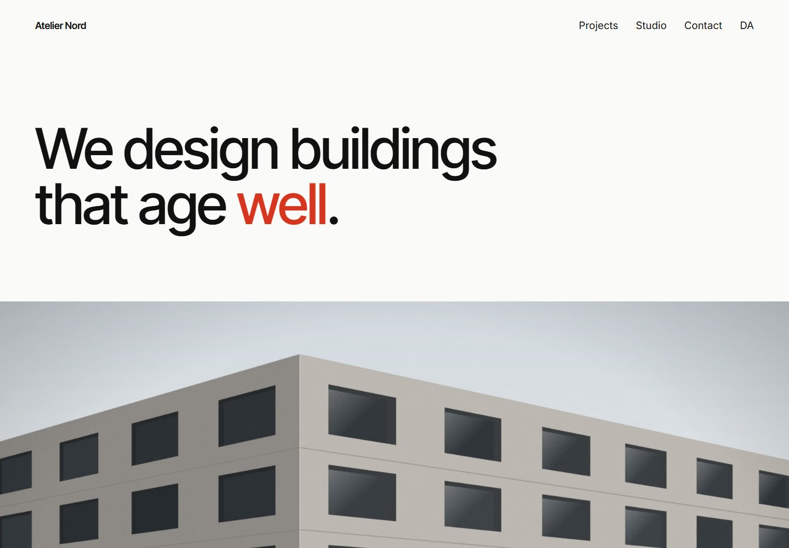

Design exploration / Minimalism / Swiss
Atelier Nord
A bilingual architecture portfolio where a disciplined grid lets the work speak for itself.

The idea behind the interface.
A portfolio for a fictional Copenhagen architecture studio, using generous white space, a twelve-column grid, and a tightly controlled palette. The content system supports complete English and Danish versions of every project, with art-directed images and clear project facts.
Inside the build
- Markdown content collections drive the project index, sector filters, and full- and half-width image layouts.
- The gallery offers grid and table views, a keyboard-accessible lightbox, and previous/next navigation that respects the active filter.
- Localized routes preserve context between Danish and English; the enquiry form has server validation and a no-JavaScript submission path.
Scope & context
Concept project. The studio, architecture projects, people, and generated imagery are fictional. Live email delivery needs an email-service configuration.